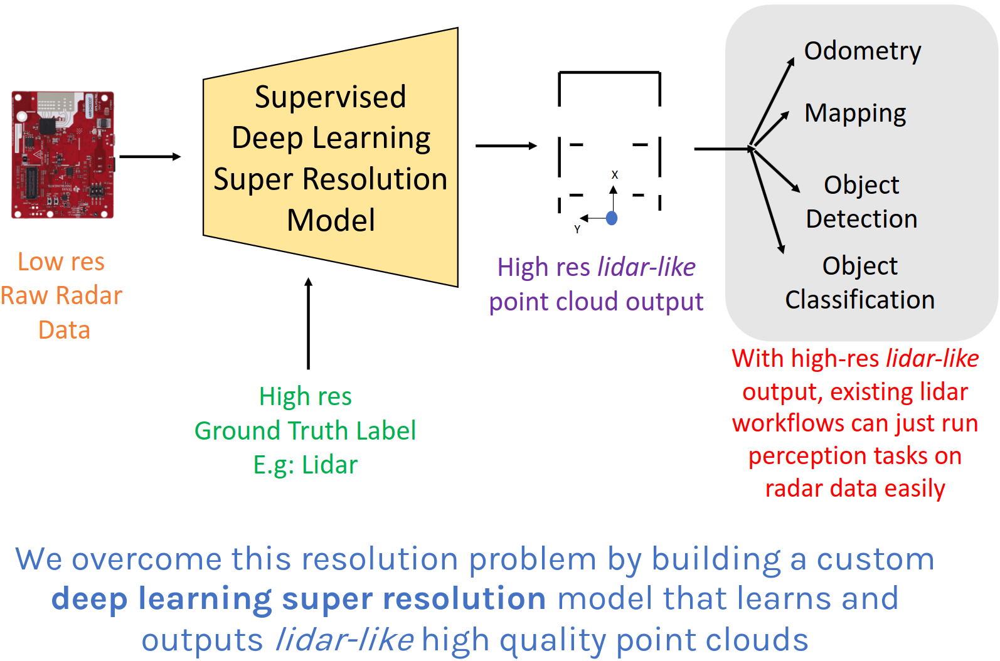
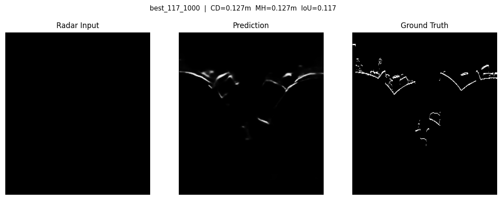
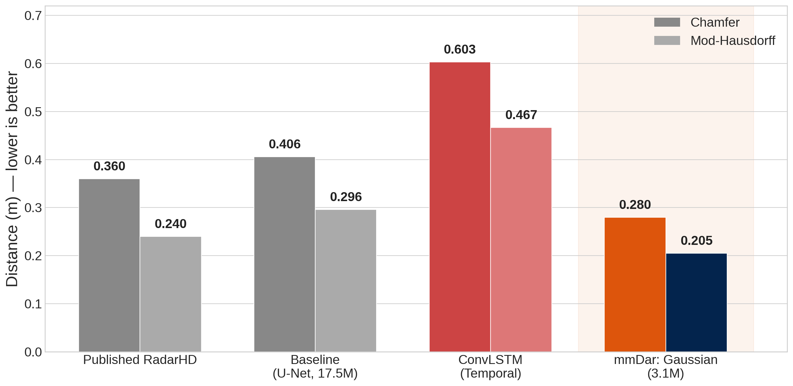

mmWave radar (77 GHz FMCW) offers all-weather, low-cost 3D sensing — but angular resolution is fundamentally limited by small antenna arrays: 8 virtual elements yield only ~14° Rayleigh resolution.
Existing approaches discard radar phase information by converting to magnitude-only images, losing the signal physics that encodes angular position.
Goal: Transform sparse radar returns into dense, lidar-quality BEV point clouds using physics-informed machine learning that preserves signal structure.

Paired TI AWR1843 77 GHz FMCW radar and Velodyne VLP-16 lidar, synchronized per-frame, from the RadarHD dataset.
Split: 17 train / 8 validation / 19 test trajectories
Test set: 18,575 frames — sealed evaluation, val-selected checkpoints only (no test-set peeking)

The classical FFT beamformer provides the physics baseline as input features — the neural network learns only the residual improvement, what the FFT cannot resolve. Hungarian NLL loss ensures one-to-one point assignment, preventing point spray. Heteroscedastic σ scales with range (angular uncertainty × distance), matching radar physics.
Average bidirectional nearest-neighbor distance. Measures overall coverage — are predicted points close to ground truth on average?
95th percentile of nearest-neighbor distances. Penalizes outliers and gaps — no single predicted point should be far from ground truth.
Chamfer optimizes for mean (coverage). mod-Hausdorff optimizes for precision. A model that sprays points everywhere scores well on Chamfer but poorly on Hausdorff. Our Gaussian model improves both.
| Model | Chamfer ↓ | Mod-H ↓ | Params |
|---|---|---|---|
| Published RadarHD | 0.360 | 0.240 | 17.5M |
| Our Baseline (U-Net) | 0.406 | 0.296 | 17.5M |
| ConvLSTM | 0.603 | — | — |
| Ours (Gaussian) | 0.280 | 0.205 | 3.1M |

Conclusions: Physics as input (FFT) outperforms learning from magnitude images. Temporal modeling hurts when applied after spatial downsampling. Gaussian output with Hungarian matching produces cleaner, sparser point clouds.
Future work: Complex-valued neural networks operating directly on raw antenna IQ data — preserving phase through the entire pipeline.